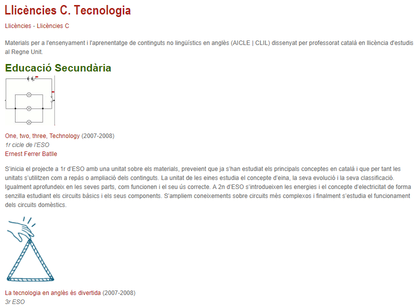
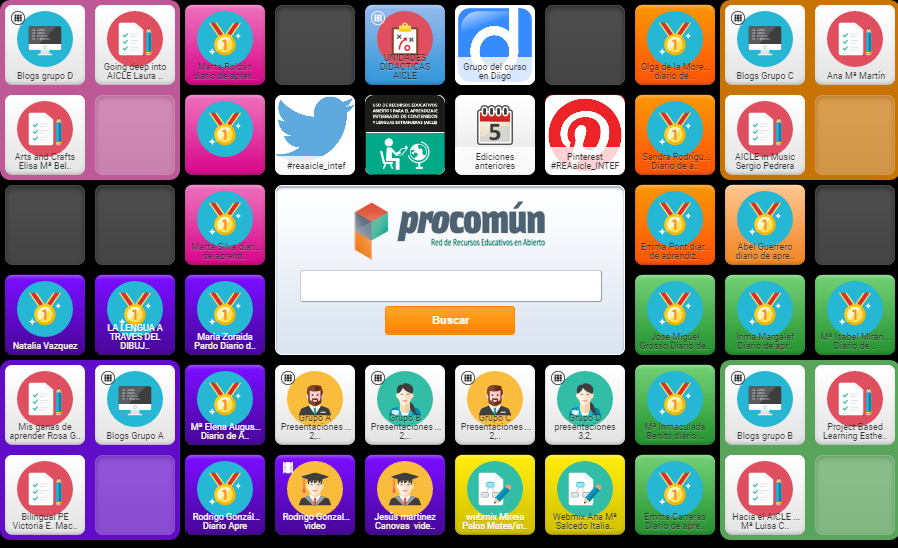

Materiales y recursos específicos AICLE
En la anterior taxonomía hemos establecido la división de los materiales didácticos en recursos de contenido de materia no lingüística (ciencias, geografía, matemáticas, etc.) y contenidos específicos de lengua. En el presente apartado hablaremos de los primeros.
Por otra parte, en apartados previos hemos respondido a la pregunta de cómo encontrar recursos para usarlos en el aula AICLE y de los principales repositorios de REA. La gran mayoría de estos REA y recursos educativos no están pensados para AICLE. No existen repositorios de materiales propiamente AICLE como tal, aunque algunos portales educativos sí incluyen contenidos AICLE. Este es uno de los reclamos más importantes del profesorado AICLE.
1. ¿Dónde podemos encontrar unidades de contenido AICLE que se hayan elaborado como tal?
He aquí algunos de los sitios que conocemos donde podemos encontrarlos, la mayoría en inglés, algunos en francés o alemán:
Unidades AICLE de la Junta de Andalucía, para francés, alemán e inglés y para niveles de primaria y secundaria.
Materiales AICLE en el portal catalán Xtec diseñados por profesores en licencias y en estancias en el Reino Unido.

- Unidades didácticas del Proyecto Conbat+ (European Centre for Modern Languages). Principalmente para el primer ciclo de la ESO.
- Materiales creados por otros compañeros y que los comparten en páginas que ellos crean o en espacios de la Web 2.0 (blogs, wikis, etc.).
- Unidades didácticas de francés en el portal de los centros bilingües de francés de Aragón, si realizas búsquedas de acuerdo al nivel educativo podrás acceder a las UDI:ejemplo para secundaria.
- Un ejemplo puede ser las páginas de tresprofesores del IES La Madrazade Granada.
- Otro ejemplo de página personal es la deArturo Muriascuyos materiales de biología pueden ser usados bajo licencia CC.
Para ver más ejemplos, visita la página web de Isabel Pérez.
2. ¿Qué tipo de materiales suelen ser los más utilizados por los profesores AICLE? Y ¿cómo buscarlos?
Además de los textos que lógicamente pueden ser útiles para el aula y para la elaboración de materiales propios a partir de ellos, los materiales que suelen ser más útiles o buscados serán:
Vídeos, animaciones e imágenes de los que ya hemos hablado. Ejemplos: Daily routine, Parts of a plan video o 5 things a plant needs to live song
Tarjetas (flashcards), animaciones, ejercicios interactivos (quizzes), experimentos, presentaciones. Por ejemplo, los que se ven en las siguientes páginas: flashcards, mapas interactivos, ejercicios, experimentos, presentaciones, animaciones.
- También, actividades más completas tipo cazas del tesoro (Treasure hunts/scavenger hunts), Webtasks o WebQuests.
- Actividades listas para usar: muestras de editoriales The bean, Life cycles, Finish the picture.
Elaboración propia con Wordle CC BY SA
Aquí hemos enlazado algunos ejemplos, pero para buscar más podemos usar la búsqueda avanzada de Google y especificar el tipo de archivo que buscamos, es decir, el tipo de extensión (ej. pdf, ppt, swf, etc.) o el tipo de actividad (ej. flashcards). Recuerda la sintaxis recomendada al principio de este bloque para afinar más tu búsqueda.
Por otro lado, además de los portales educativos que ya exploramos en un apartado anterior, en inglés existen numerosos sitios destinados a la enseñanza de una determinada materia y que puedes explorar según la materia de tu interés y la L2.
En los siguientes enlaces podéis dar un paseo por este tipo de recursos:
En Inglés:
SEN Teacher página originalmente ideada para estudiantes con dificultades especiales, pero útil para todo tipo de alumnos. Contiene fichas para imprimir, enlaces, descargas e instrumentos de búsqueda muy útiles para el profesor. Ofrece material de todas las áreas.
Sparklebox material para el aula listo para descargar. También ofrece recursos en castellano.
Francés
Generales, ciencias, matemáticas, etc.
Español
En español y otras lenguas,/Historia
3. ¿Qué puedo hacer cuando el material que encuentro y me interesa no es de dominio público o de licencia libre de uso y/o modificación?
En el caso de los vídeos, si permiten que se inserten en una web es porque el autor lo ha establecido así, pero en el caso de textos, imágenes y otros recursos que nos interesen y no sean de dominio público o no tengan una licencia libre, lo que podemos hacer es simplemente enlazarlos desde una agregador de favoritos como es Diigo o marcador social como por ejemplo Pinterest o Pearltrees. Otra opción es crear un tablero en Symbaloo en el que hayas guardado todos aquellos materiales que has ido encontrando y que te vayan a ser de utilidad para tu unidad.
También podemos hacerlo desde un sitio web que tengamos, ya sea en la página de nuestro centro o en otros espacios de la Web 2.0 que hemos visto en el apartado Organización y alojamiento de materiales.
Guardar
Guardar

______________ por ______________ bajo licencia Creative Commons Reconocimiento-NoComercial-CompartirIgual 4.0 Internacional License.